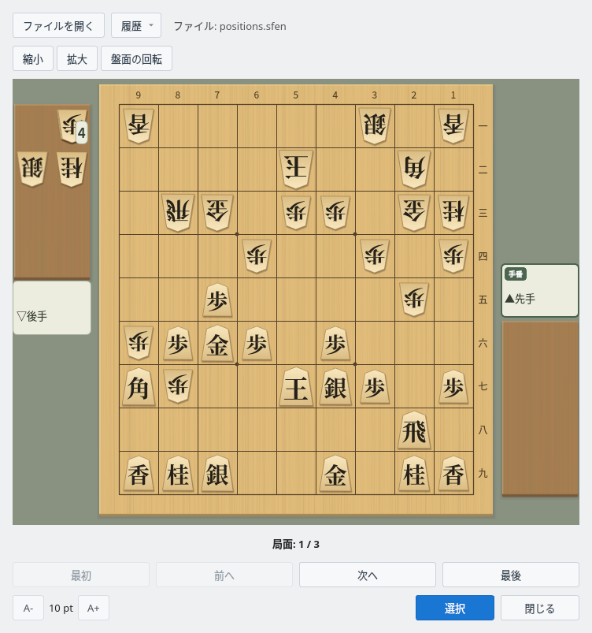
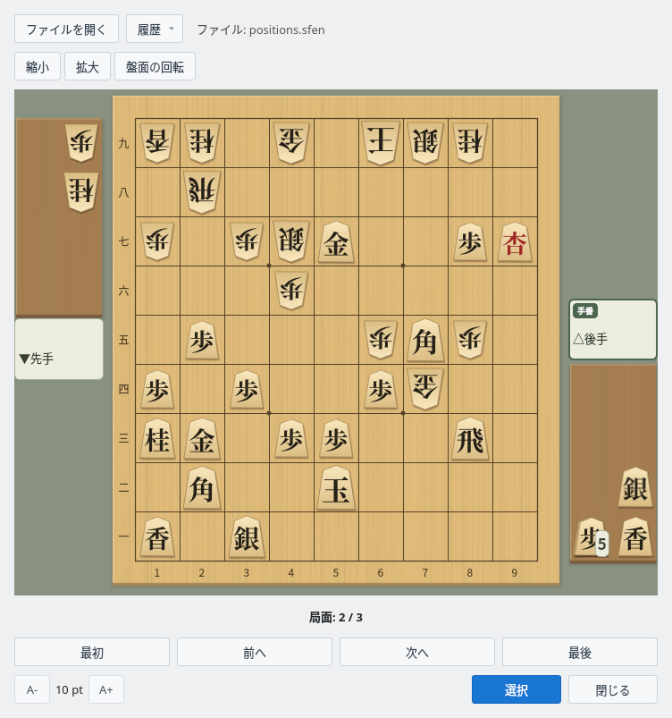
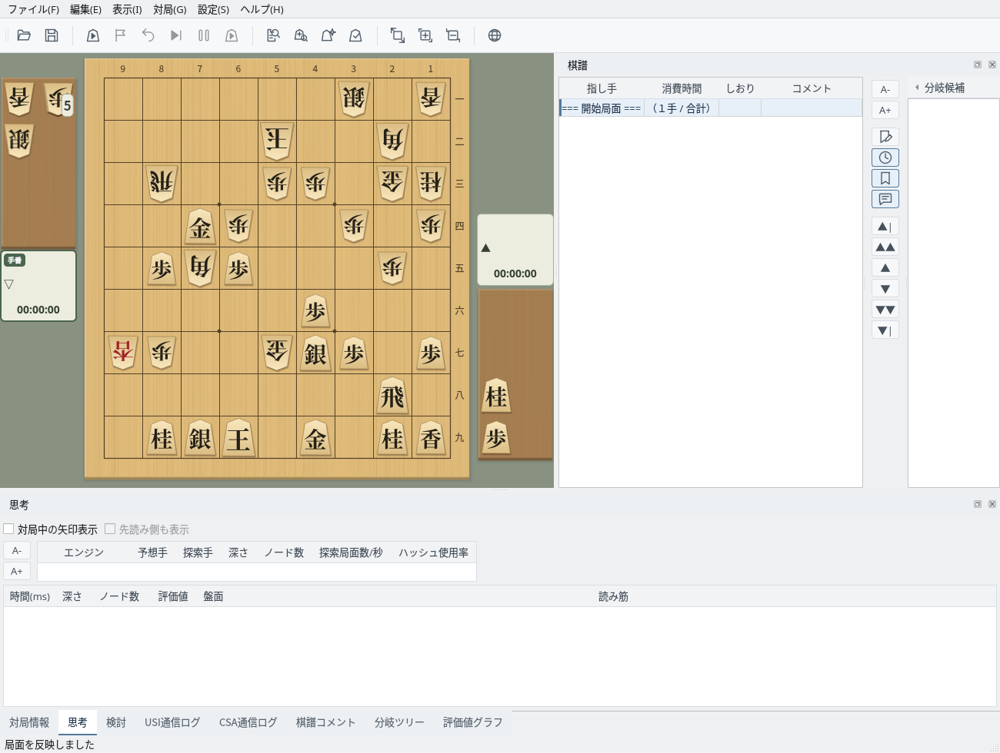

SFEN形式の局面集を盤面で閲覧し、メイン画面に取り込む
1行に1局面のSFENを書いたテキストファイルを用意します
局面集ファイルは、1行に1局面を書いたテキストファイル（.sfen や .txt）です。空行と「#」で始まる行（コメント）は読み飛ばします。詰将棋局面生成で保存したファイルもそのまま開けます。
局面として読めない行（盤面や持ち駒の書き方の誤り、指せない手など）は飛ばして読み込み、ファイル名の横に飛ばした行数を表示します。局面が1つもないファイルを選んだときはメッセージを表示し、表示中の局面集はそのまま残ります。
# 鈴木 vs 山田（2026年10月5日）から3局面
l5s1l/4k2b1/1rg1pp1gn/3p2p1p/2P4p1/pPGP1P3/Bp2KSP1P/7R1/LNS2G1NL b sn4p 63
6s1l/4k2b1/1r2pp1gn/2Gp2p1p/1PbP3p1/5P3/+lp2gSP1P/7R1/1NSK1G1NL w NPsl5p 78
6s1l/4k4/4pp1gn/2pp2p1p/1BrP3p1/1sP2P3/K1+b1gSP1P/3+l3R1/5G1NL b GSLP2n5p 101局面集ビューアで局面を順に確認します
「編集」→「局面集ビューア」で局面集ビューアを開きます。メイン画面とは別のウィンドウなので、開いたままメイン画面も操作できます。
「ファイルを開く」で局面集ファイルを選ぶと、1局面目が盤面に表示されます。持ち駒は駒台に、次に指す側は対局者名の「手番」の印で示され、盤の下に「局面: 1 / 3」のように何局面目かが表示されます。「履歴」からは最近開いたファイル（5件まで）を開けます。

局面集ビューア：positions.sfen を開き、1局面目（先手番）を表示
「最初」「前へ」「次へ」「最後」で局面を移動します。「盤面の回転」で、後手側から見た向きに切り替えます。
「拡大」「縮小」（または盤の上で Ctrl＋マウスホイール）で盤の大きさを変えると、ウィンドウも盤に合わせて大きさが変わります。盤の大きさは次に開いたときも使われます。左下の「A-」「A+」はボタンや文字の大きさを変えます。

盤面の回転：2局面目（後手番）を後手側から見た向き
選んだ局面をメイン画面に取り込みます
取り込みたい局面を表示して「選択」を押すと、その局面がメイン画面の開始局面になり、棋譜は開始局面だけになります。そこから検討を始めたり、開始局面に「現在の局面」を選んで対局したりできます。
メイン画面に未保存の棋譜があるときは、先に保存するかの確認が表示されます。取り込んだ局面は新しい棋譜として扱われ、「上書き保存」では前に開いていた棋譜ファイルに書き込まず、「名前を付けて保存」が開きます。局面集ビューアは開いたままなので、続けて別の局面を取り込めます。

メイン画面：2局面目を開始局面として取り込んだところ